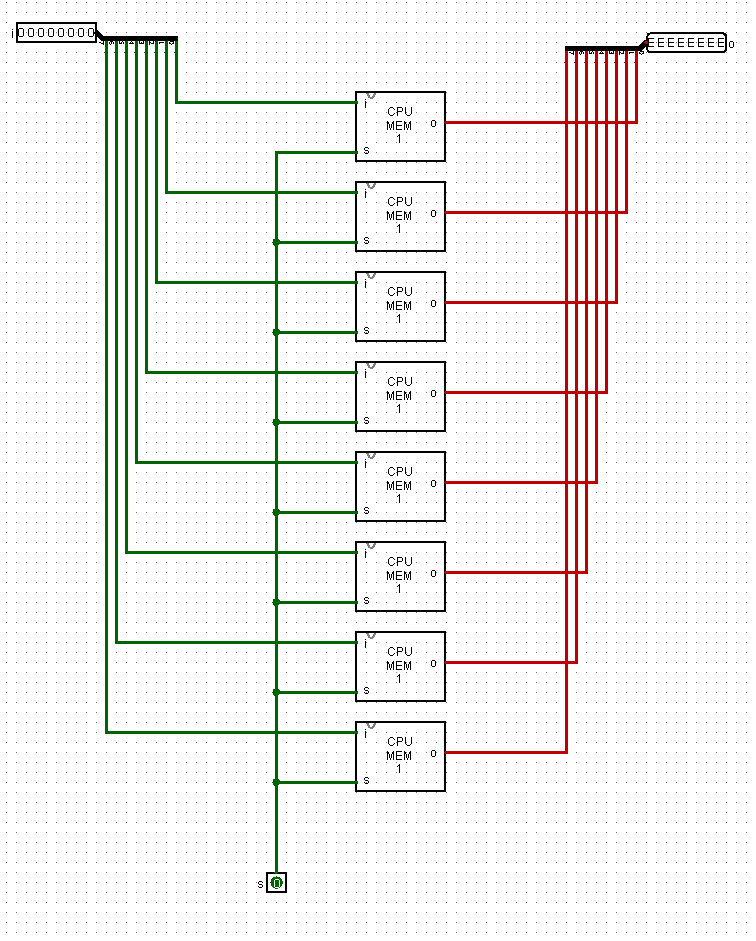
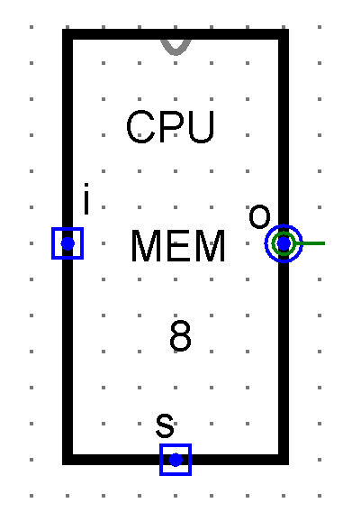
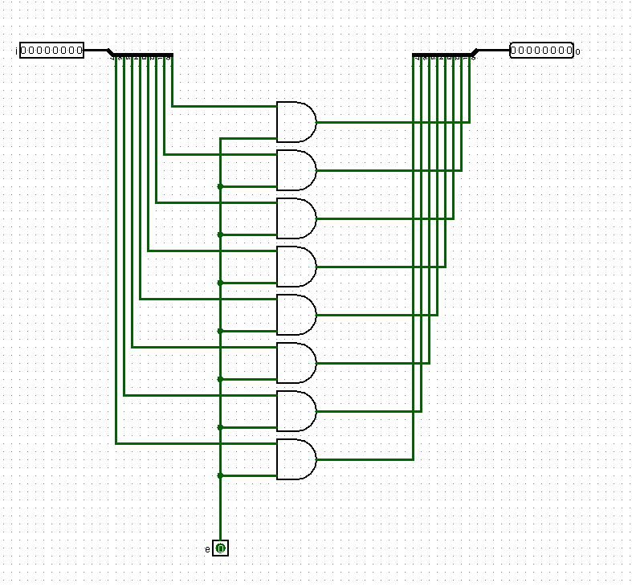
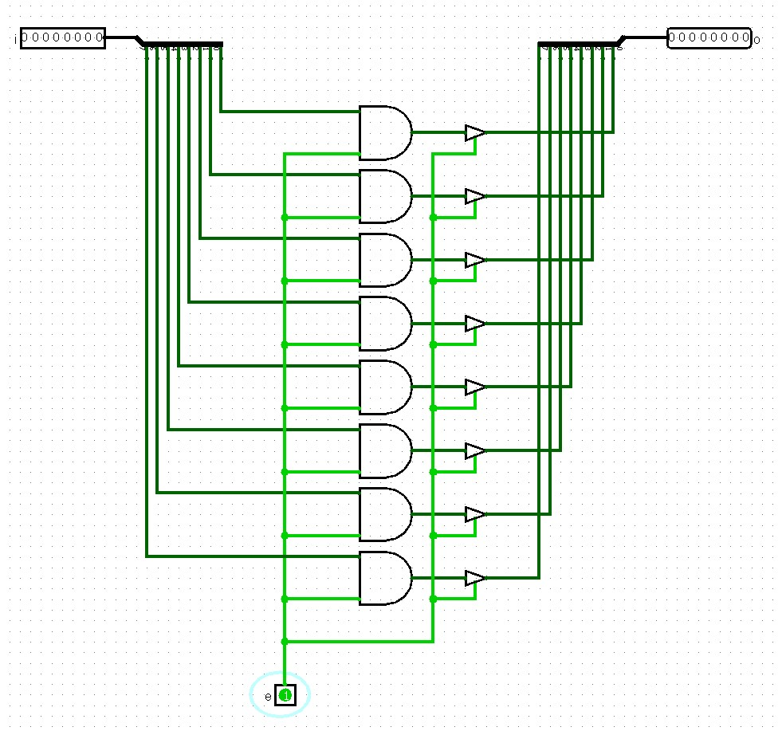
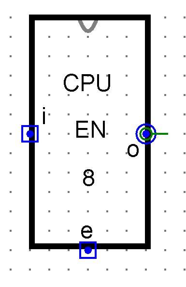
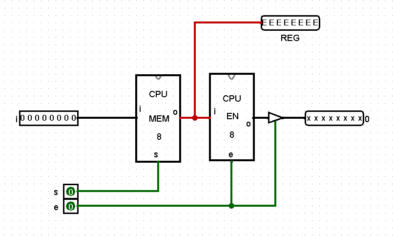
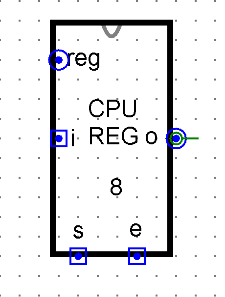

We first need to create an 8-bit memory circuit using the 1-bit S-R latch we previously made. Then we will use this 8-bit memory circuit to create an 8-bit register. The register will be our primary memory device. To use the register, we need to be able to:
Store or move bits into the register
Retrieve or move bits out of the register
The tabs below walk through the creation of the register and the entire process is captured in the provided video. Please review all tabs before proceeding.
8-bit Memory
An 8-bit memory circuit is comprised of 8 1-bit Gated Latches as shown below:

8-bit Memory Circuit with Gated Latches
In the image shown, we have an 8-bit input labeled "i" for input, an 8-bit output labeled "o" for output, and a 1-bit input labeled "s" for set. For those in Lab, we renamed what was "enable" to "set." The reason should become clear in a moment—it allows us to "Set" what is stored and then we can "Enable" our output circuit to get what is stored.
When editing the "Circuit Appearance" for the 8-bit memory circuit, I created a rectangle that was taller than wide.

8-bit Memory Circuit Symbol
8-bit Enable Circuit
To get memory out, we need to create a new circuit of 8 parallel AND gates which will allow us to take any 8-bit input and pass it to the output.

8-bit Enable Circuit with Parallel AND Gates
For this circuit, the output is "0000 0000" when the enable bit is "0" and equal to the input whenever the enable bit is "1." So we set enable to 1 to get what is on the input line and set it to 0 to not send anything out.
Adding a Controlled Buffer
To complete our 8-bit Register, we need to add controlled buffers to each of the individual enable outputs in the 8-bit enable circuit:

8-bit Register with Controlled Buffers
This allows us to set what is stored in memory using the "set" bit and to retrieve what is stored in memory using the "enable" bit.
Similar to the 8-bit memory circuit, the 8-bit enable circuit is also represented as a rectangle.

8-bit Enable Circuit Symbol
An 8-bit Register
Now we need to combine our Memory and Enable circuits to make an 8-bit register. We also need to add a controlled buffer between the output from the Enable circuit and the 8-bit output pin.

Complete 8-bit Register Circuit
This allows us to set what is stored in memory using the "set" bit and to retrieve what is stored in memory using the "enable" bit.
The circuit appearance for the 8-bit register uses the same rectangle design as the memory and enable circuits.

8-bit Register Circuit Symbol
Video Demo
Video Demonstration
Watch the complete demonstration of 8-bit register creation: